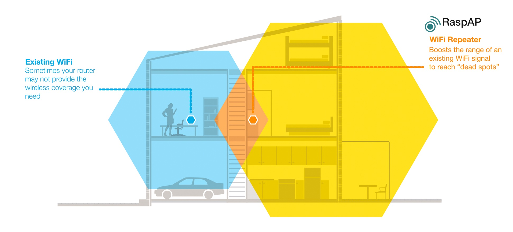
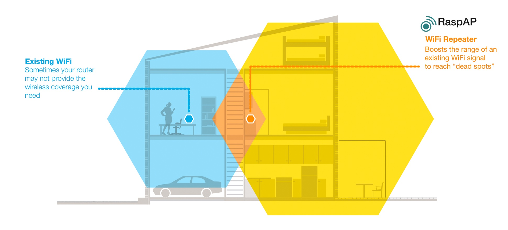

Use a Mikrotik as a Repeater
A mikrotik can be used as a repeater to widen the range of wifi reachability. Here is a how to to setup and troubleshoot mikrotik repeater.

A mikrotik can be used as a repeater to widen the range of wifi reachability. Here is a how to to setup and troubleshoot mikrotik repeater.
